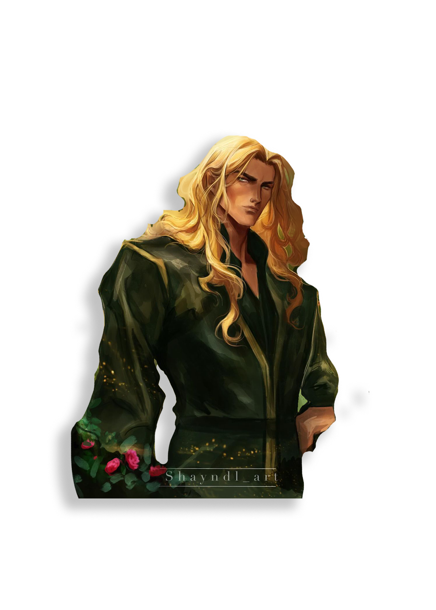
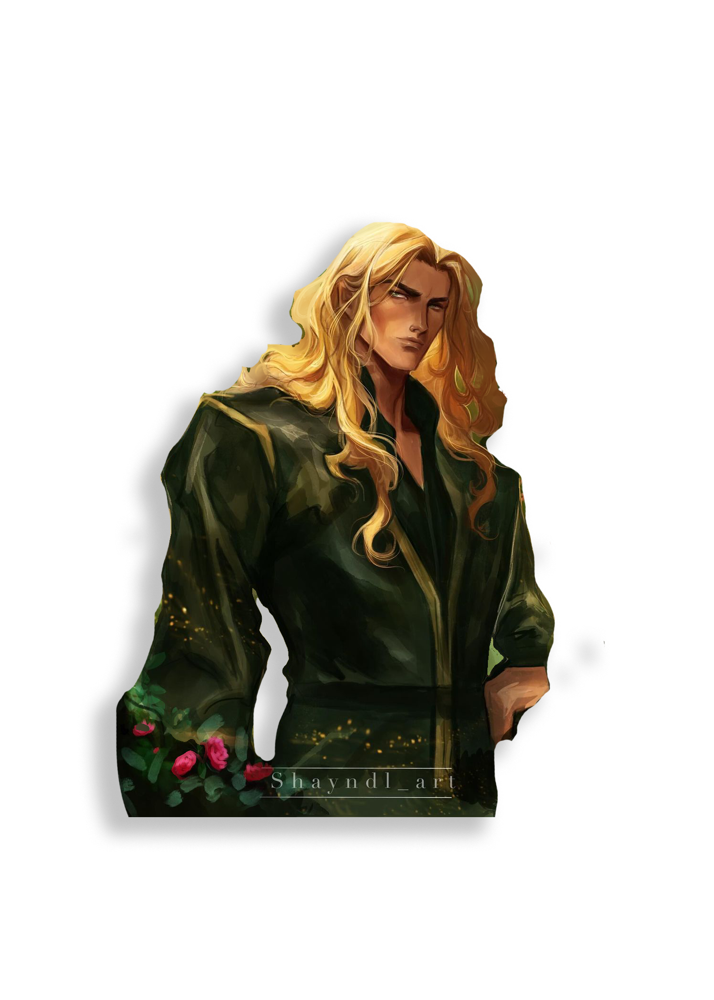
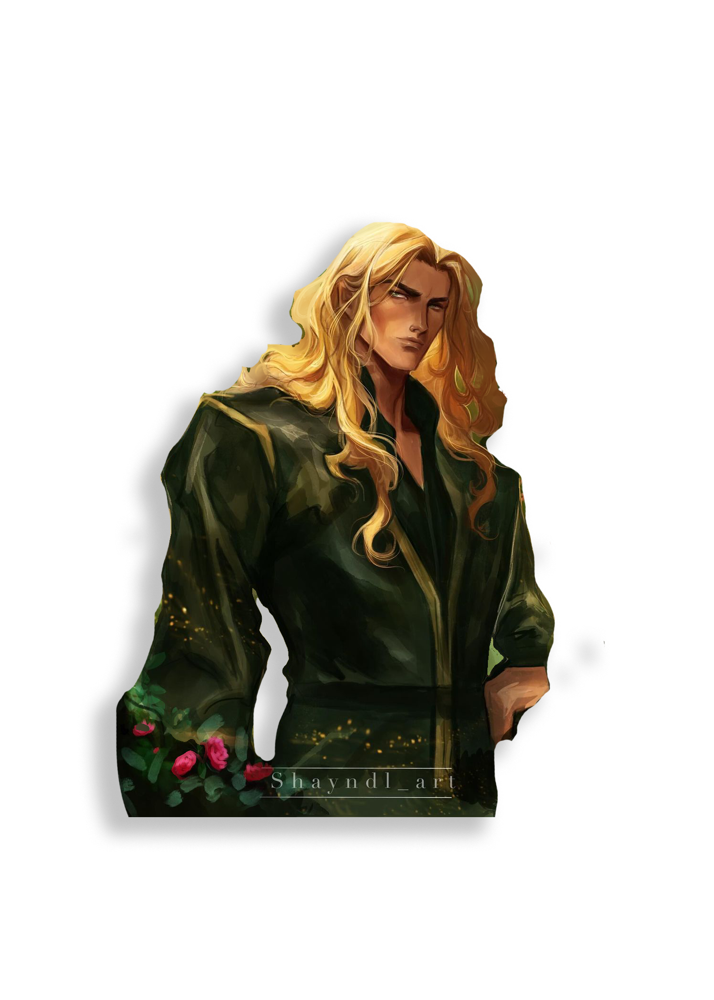
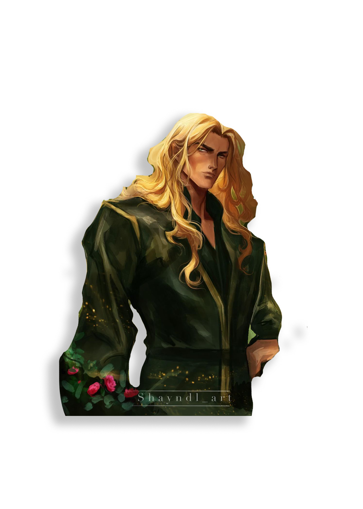

“ Spring, Summer, Autumn, Winter, Dawn, Day, and Night. The seven Courts of Prythian, each ruled by a High Lord, all of them deadly in their own way. ”
–The Suriel to Feyre Archeron, A Court of Thorns and Roses
The Spring Court is a land of rolling green hills, lush forests, and clear, bottomless lakes. Magic didn’t just abound in the bumps and the hollows – it grew there. To the south, the Court borders the Wall and likewise the Mortal Realm. Its northern borders are the Summer Court and the Autumn Court.
While the Spring Court boasts no cities, a large village is located close to the High Lord’s estate, less than five miles away. Most of the village was destroyed due to Amarantha; however, a tavern and a well in the middle of the village had been completely rebuilt.
In the time period of A Court of Frost and Starlight, the Spring Court is described as unkempt and breaking into pieces. The manor is crumbling, hasn't been cleaned, and Tamlin has lost all respect in his own Court. This is Feyre Archeron's doing from when she left and turned the Spring Court against Tamlin.